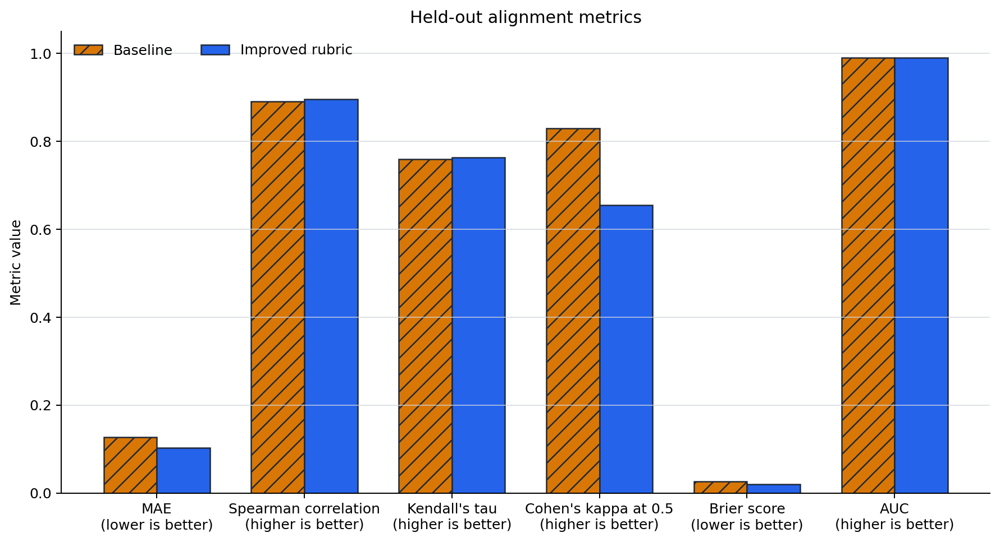
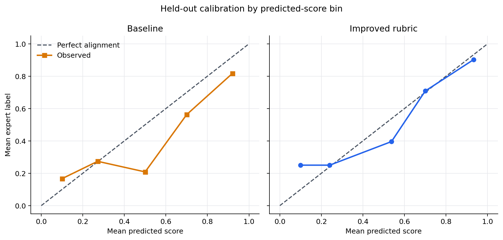
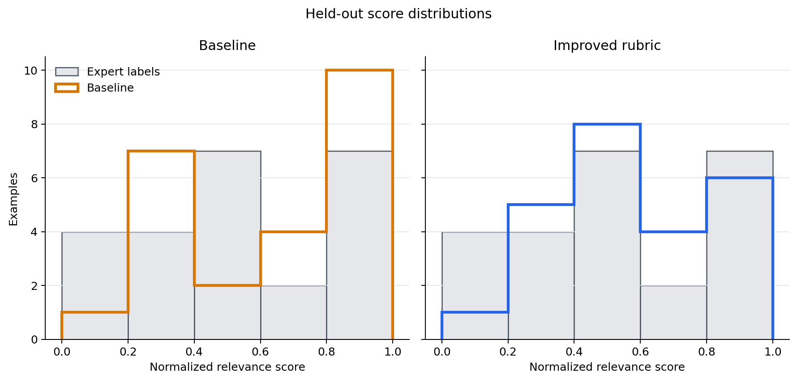
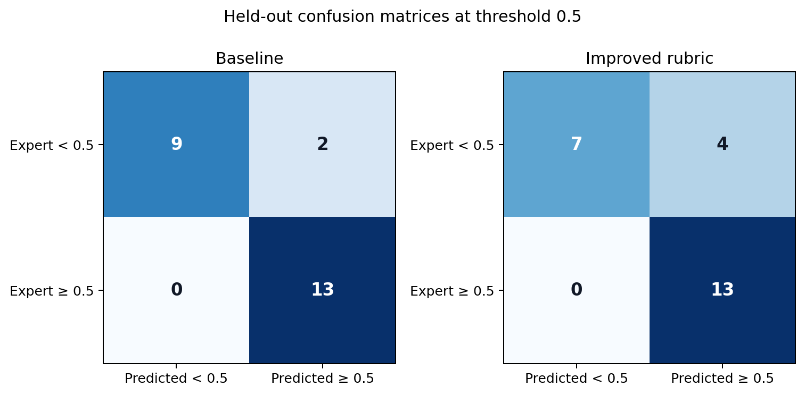

From Judge Scores to Evidence: Improving LLM Evaluator Alignment¶
An LLM judge can produce a number for every response and still be a poor evaluator. It may rank examples in roughly the right order while consistently scoring too high, or look accurate on average while making costly mistakes near a decision threshold. Before relying on a judge, we need to compare it with human labels and inspect where its scores disagree.
This post walks through a small, reproducible experiment with
AlignmentReport.
I establish a plausible summary-relevance judge, diagnose it on development
data, revise only its rubric, and compare both versions on an untouched
held-out split.
The benchmark and experimental controls¶
I used the MTEB distribution of SummEval, derived from the MIT-licensed SummEval benchmark. SummEval contains 100 news articles, 16 machine summaries per article, and human ratings from expert annotators. The task here is relevance: selecting the important content from the source article.
The released expert relevance means use a 1–5 scale. I mapped them to the
interval expected by AlignmentReport:
normalized_label = (expert_relevance_mean - 1) / 4
The companion script pins the MTEB parquet by URL, revision, and SHA-256. It
also applies a deterministic keyword filter to remove articles about sexual,
violent, medical, and other sensitive topics before sampling. With seed
20260731, it selects 72 summaries: 24 development, 24 validation, and 24
held-out. Each split contains eight labels from each range [0, 0.3),
[0.3, 0.7), and [0.7, 1]. Articles never cross splits.
How the three splits were used¶
Each split had a separate role:
- Development: I ran the baseline judge, inspected its metrics and worst misses, and used those errors to design candidate rubric improvements.
- Validation: I evaluated candidate rubrics without touching the held-out examples. One candidate was rejected because it improved calibration while making several agreement metrics worse.
- Held-out: I froze the final rubric, then ran the baseline and improved judges on the untouched held-out split for the final comparison.
The held-out results did not influence rubric development or selection.
Everything except the rubric stayed constant:
- Google Gemini Developer API, model
gemini-3.1-flash-lite - temperature
0.0and seed123in the provider request - integer judge scale 0–10, normalized to
[0, 1] - identical examples, order, parser, retries, and request pacing
- report threshold
0.5, additional thresholds0.3and0.7 - run date July 31, 2026
Parsed judge scores and reason metadata are cached locally by model, prompt hash, and sample ID, so an interrupted run resumes without repeating requests. The cache does not contain API keys or source articles.
A reasonable baseline¶
The baseline was intentionally simple, not intentionally bad:
Score how relevant the summary is to the source article. A better summary
captures more of the article's important information.
On the development split, it achieved Spearman correlation 0.729 and AUC
0.879, but the rest of the report showed a high-score collapse. Thirteen of
24 predictions landed in [0.8, 1.0], compared with seven expert labels in
that range. Mean absolute error (MAE) was 0.174.
The worst misses made the pattern concrete:
- An England Under-17 summary with repeated group information had an expert
label of
0.167; the judge assigned0.8. - A summary that mixed the central Space Invaders/UFO story with peripheral
wrestling details had an expert label of
0.25; the judge again assigned0.8. - In the other direction, a compact summary of the article's main Ben Stokes
narrative had an expert label of
0.833but received0.4.
The generic criterion recognized topical overlap, but did not say how to balance the central event, supporting context, repetition, and peripheral details.
Running AlignmentReport¶
AlignmentReport takes in the predicted scores and ground truth labels directly
for comparison:
from trulens.benchmark import AlignmentReport
report = AlignmentReport(
predicted_scores=predicted_scores,
true_labels=true_labels,
examples=examples,
threshold=0.5,
thresholds=[0.3, 0.5, 0.7],
n_bins=5,
top_n=5,
)
frames = report.to_dataframe()
report.print_summary()
figures = report.plot()
html = report.to_html()
to_dataframe() returns six sections:
summary: MAE, Spearman correlation, Kendall's tau, Cohen's kappa, Brier score, and AUC.confusion_matrix: true/false positives and negatives at each requested threshold.calibration: count, mean prediction, and mean true label for bins formed from the predicted scores.score_distribution: predicted-score and true-label counts by score bin.worst_misses: the largest absolute errors, with the corresponding example columns when supplied.difficulty_breakdown: counts and metrics grouped by true-label range. For this experiment, the three ranges correspond to low ([0, 0.3)), medium ([0.3, 0.7)), and high ([0.7, 1]) relevance scores.
Although the dataframe currently names these buckets easy, medium, and
hard, higher relevance does not mean that a summary is harder to evaluate.
I therefore treat this output only as a score-range breakdown and refer to
the buckets by their numeric ranges below. plot() creates the built-in
calibration and score-distribution figures. The companion script builds the
comparison and confusion-matrix figures from the exported dataframes.
No single summary metric covers all of this. Spearman and Kendall measure ranking agreement. MAE measures absolute score error. Brier measures squared calibration error. Kappa describes thresholded classification agreement, while AUC measures separation across thresholds when the true labels are binarized at the report threshold.
Turning the diagnosis into a rubric¶
The development-set errors showed that the generic rubric left several decisions implicit. The judge had to decide whether a summary captured the central event, how much important supporting context it preserved, and whether repetition or peripheral details displaced more important content, but the baseline criterion provided no guidance for balancing those factors.
I converted these recurring failure modes into separately scored components. Central content receives most of the available points because a summary that misses the article's main event should not receive a high relevance score. Supporting context distinguishes partial coverage from comprehensive coverage. The smaller focus component prevents repetition and peripheral details from outweighing otherwise strong content selection.
This produces an additive rubric in which the judge must account for where each point came from instead of giving an unanchored overall impression:
Build the integer score from three components:
1. Central content, 0-6 points: from no central event or claim to a clear
account of it.
2. Supporting context, 0-3 points: from none to essentially all important
supporting context.
3. Focus, 0-1 point: award the point when repetition or peripheral details
do not materially displace important content.
Add the components. Repeated versions of the same fact count once. Do not
require every detail: a concise summary may score highly when it preserves
the lead and important supporting context.
I developed this structure from the development-set misses, not from the held-out results. I then evaluated candidate wording on the validation split. After rejecting the first candidate, I froze this version before running either judge on the held-out split.
The full prompt also tells the judge not to reward fluency, grammaticality, factual consistency, or length except when those properties change coverage. Those qualities have separate SummEval dimensions; including them here would change the target.
Held-out results¶
The headline comparison below comes only from the 24 untouched held-out examples.
| Metric | Baseline | Improved rubric | Preferred direction |
|---|---|---|---|
| MAE | 0.127 | 0.103 | Lower |
| Spearman correlation | 0.890 | 0.896 | Higher |
| Kendall's tau | 0.759 | 0.763 | Higher |
| Cohen's kappa at 0.5 | 0.830 | 0.655 | Higher |
| Brier score | 0.0264 | 0.0196 | Lower |
| AUC | 0.990 | 0.990 | Higher |

The rubric reduced absolute error and improved calibration. Ranking agreement also increased slightly, while AUC was unchanged. The score distribution shifted away from the baseline's most confident predictions, and the calibration curve moved closer to the diagonal in the upper score bins.


The improvement was not universal. At threshold 0.5, both judges found all 13
positive examples, but false positives rose from two to four. Kappa therefore
fell from 0.830 to 0.655.

The score-range breakdown shows another tradeoff. MAE improved from 0.175 to
0.083 in the [0.3, 0.7) range and stayed at 0.085 in [0.7, 1], but
worsened from 0.121 to 0.142 in [0, 0.3). Thresholds should therefore be
rechecked after changing a rubric; better continuous calibration does not
guarantee better decisions at one cutoff.
The misses that remain¶
The baseline's largest held-out error was 0.35: it gave 0.6 to a summary
with venue details and a match-winning free kick, while experts assigned
0.25. The component rubric lowered that prediction to 0.4, reducing the
error to 0.15.
The improved judge's largest remaining error was 0.333. A summary mentioned
a red Seattle sunset and villages destroyed by Siberian fires, but omitted the
article's central causal chain: wildfire smoke crossed the Pacific and
filtered the sunlight. Experts assigned 0.167; the judge assigned 0.5.
The details were true and topical, yet disconnected. A future rubric could ask
whether the selected facts preserve the relationship that makes the article's
main point, but that hypothesis needs a new development cycle and new held-out
data.
What this experiment does—and does not—show¶
AlignmentReport turned a vague goal, “make the judge better,” into testable
claims about ranking, absolute error, calibration, thresholds, and individual
failures. It also prevented a misleading success story: the first rubric
candidate looked better on development but did not transfer cleanly to
validation.
This is still a 24-example held-out tutorial, deliberately balanced across score ranges rather than sampled to estimate a production prevalence. It cannot establish broad generalization or production readiness. Gemini's temperature is zero, but provider behavior can still change over time, and the small sample makes all metric differences uncertain. Most importantly, none of these diagnostics exists without genuine human labels. Prompt tuning can make a judge fit a defined target better; it cannot define that target for us.
Reproduce the experiment¶
From the repository root:
poetry install --with dev,docs,benchmark,providers
poetry run pip install matplotlib==3.10.5 pyarrow==25.0.0
export GEMINI_API_KEY="<your-key>"
SCRIPT=examples/expositional/use_cases/alignment_report/alignment_report_before_after.py
poetry run python "$SCRIPT" --stage prepare
poetry run python "$SCRIPT" --stage baseline-development
poetry run python "$SCRIPT" --stage improved-development
poetry run python "$SCRIPT" --stage validation
poetry run python "$SCRIPT" --stage held-out
poetry run python "$SCRIPT" --stage report
The local cache defaults to
~/.cache/trulens/alignment_report_blog/. The report stage exports all
dataframes, HTML reports, scores, and built-in plots there, then writes the
four publication figures and
alignment_report_results.json
under the blog assets directory.
For more context, see the
AlignmentReport contribution,
the TruLens documentation, and the
TruLens repository.